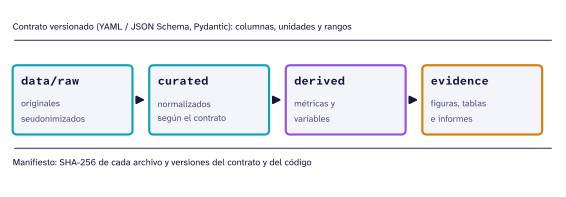

- Estado
- En curso
- Tipo
- Monolito modular local
- Tecnologías
- Python, Pydantic, YAML y JSON Schema, Parquet, Git, Quarto y uv
- Proyectos que lo usan
- Riesgo de caída, sEMG
Problema
En un experimento biomédico, los archivos del equipo, las tablas limpias, las variables calculadas y las figuras del artículo suelen terminar en la misma carpeta. Cuando un resultado cambia, nadie puede decir si cambió el dato, el código o una decisión que se tomó a mano. Los principios FAIR y las reglas de investigación computacional reproducible piden lo contrario: datos identificables, transformaciones registradas y resultados que se puedan regenerar (Wilkinson et al. 2016; Sandve et al. 2013).
BioForge busca que cada estudio del laboratorio se pueda rehacer desde el dato original sin pasos manuales, y que quede claro qué se hizo con los datos y qué no.
Métodos
Cuatro capas en una sola dirección

| Capa | Contiene | Regla |
|---|---|---|
data/raw |
Los archivos del equipo, seudonimizados | Solo lectura; los archivos con identificadores personales no entran aquí sin seudonimizar |
curated |
Tablas normalizadas según el contrato | Sin imputar faltantes; cada transformación queda en código |
derived |
Métricas y variables de análisis | Calculadas desde curated, nunca a mano |
evidence |
Figuras, tablas e informes | Se regeneran con Quarto |
Contratos, adaptadores y manifiestos
- Un contrato versionado (YAML y JSON Schema, validado con Pydantic) dice qué columnas, unidades y rangos son válidos para cada tipo de archivo.
- Un adaptador por equipo lee su formato y lo lleva al contrato; por ejemplo, la exportación multisección de Vicon o el CSV de Delsys Trigno.
- Un manifiesto guarda la huella SHA-256 de cada archivo original y las versiones del contrato y del código que se usaron.
- Una interfaz de línea de comandos revisa el entorno (
bioforge doctor) y crea la estructura de un estudio nuevo (bioforge init-study), descrito en sustudy.yaml.
Resultados
El estado del sistema por componente:
| Componente | Estado |
|---|---|
| Registro de estudios, protección de originales, SHA-256 y manifiestos | Funciona |
| Vertical de captura de movimiento (Vicon): contrato y adaptador | En curso |
Procesamiento de sEMG de raw a evidence, con ingesta a Parquet |
En curso |
| Análisis de riesgo de caída sobre la nueva estructura | En curso |
El análisis de riesgo de caída se reinició sobre la arquitectura sin perder el trabajo anterior, que quedó archivado en el historial de Git. Las páginas de riesgo de caída y sEMG muestran el flujo completo sobre datos simulados mientras se terminan las verticales con datos reales. La charla Experimentos biomédicos reproducibles presenta las reglas en que se basa el sistema.